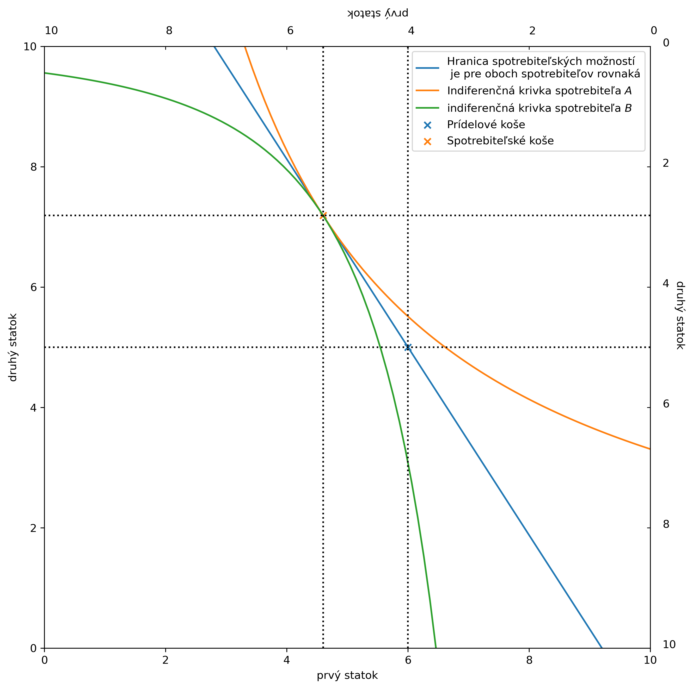
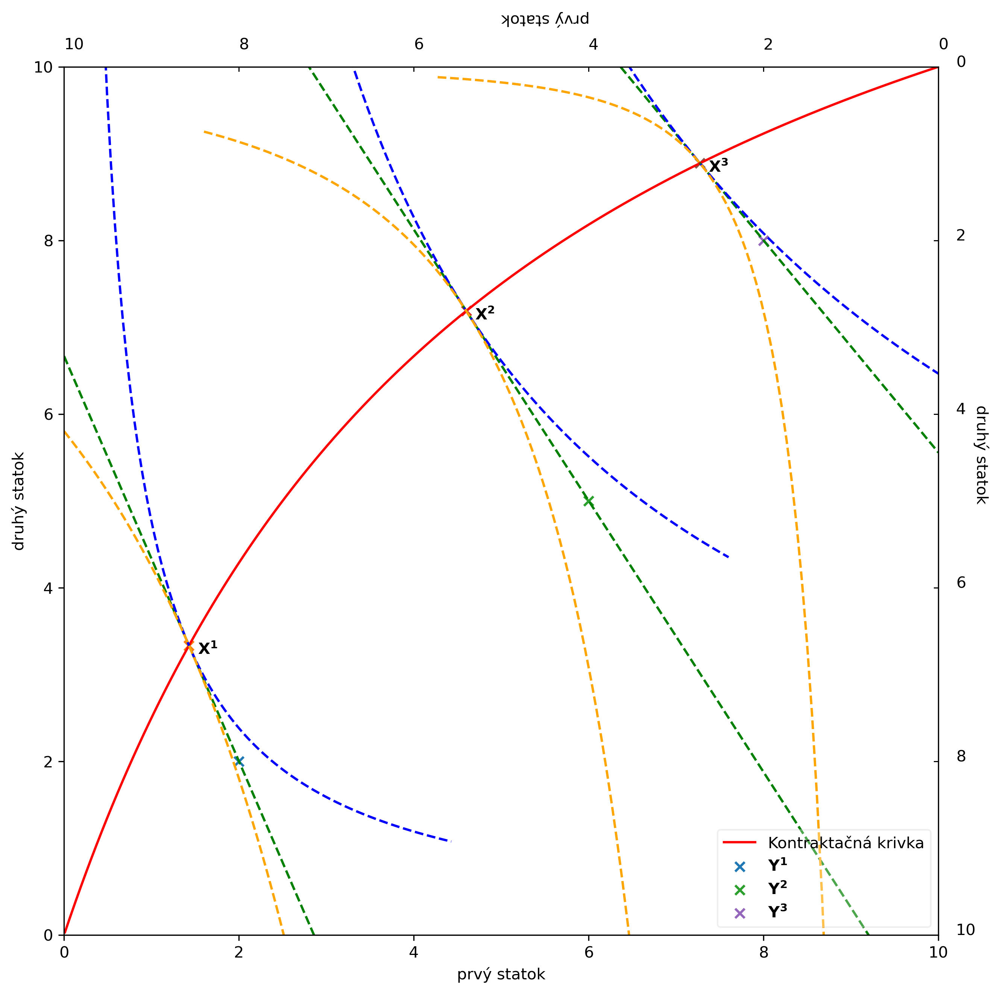

9. Teória všeobecnej rovnováhy#
V predchádzajúcich kapitolách sme skúmali správanie spotrebiteľov a firiem na jednotlivých trhoch. Predpokladali sme, že ceny sú exogénne. Spotrebitelia aj firmy ich považovali za dané a prispôsobovali im svoje rozhodnutia.
Takýto prístup je vhodný pri analýze jednotlivých trhov. Ak sa však snažíme vysvetliť fungovanie hospodárstva ako celku, vzniká prirodzená otázka:
Ak spotrebitelia a firmy považujú ceny za dané, kto ich vlastne určuje?
V ekonomike s veľkým počtom trhov sa ceny nevytvárajú izolovane. Zmeny na jednom trhu ovplyvňujú ostatné trhy a naopak. Ceny preto musia byť určené spoločne.
V teórii všeobecnej rovnováhy preto ceny nevystupujú ako exogénne, ale ako endogénne premenné modelu.
- Čiastočná (parciálna) rovnováha
rovnováha na jednotlivom trhu pri daných cenách ostatných statkov.
- Všeobecná rovnováha
stav, v ktorom sú všetky trhy v ekonomike súčasne v rovnováhe.
Koncept rovnováhy možno aplikovať na jednotlivý trh, odvetvie alebo celé hospodárstvo. Vo všeobecnej rovnováhe sa však neanalyzujú iba vzťahy v rámci jednotlivých trhov, ale aj vzťahy medzi trhmi.
Tento rozdiel je dôležitý, pretože niektoré ceny nemožno vysvetliť izolovanou analýzou jedného trhu. Sú výsledkom interakcie viacerých trhov a celej ekonomiky. Typickým príkladom je úroková miera, ktorá súvisí s rozhodnutiami domácností o úsporách, rozhodnutiami firiem o investíciách a fungovaním finančných trhov.
Najdôležitejší rozdiel medzi čiastočnou a všeobecnou rovnováhou spočíva v tom, že v čiastočnej rovnováhe sú niektoré ceny považované za dané, zatiaľ čo vo všeobecnej rovnováhe sú všetky ceny určované endogénne.
9.1. Arrowov-Debreuov svet#
Moderná teória všeobecnej rovnováhy je spojená najmä s prácou Kennetha Arrowa a Gérarda Debreua [AD54].
Arrow a Debreu ukázali, že za určitých podmienok existuje súbor cien, pri ktorom sú všetky trhy v ekonomike súčasne v rovnováhe. Ich model vytvoril základ modernej mikroekonomickej teórie a dodnes predstavuje štandardný rámec pre analýzu fungovania trhového hospodárstva.
Pri opise hospodárstva používajú Arrow a Debreu veľmi široké chápanie statku.
- Arrowov-Debreuov statok
statok definovaný svojimi fyzickými vlastnosťami, miestom dodania, časom dodania a prípadne stavom sveta, v ktorom bude dodaný.
Preto nie je dôležité iba to, čo sa spotrebúva, ale aj kedy a kde sa spotrebúva.
Tento spôsob uvažovania sme už implicitne použili v predchádzajúcej kapitole. Spotrebu v prvom období sme označovali ako \(c\) a spotrebu v druhom období ako \(c'\). Hoci ide o ten istý fyzický statok, z pohľadu Arrowovho-Debreuovho modelu ide o dva rôzne statky, pretože sú spotrebované v rôznom čase.
Arrowov-Debreuov svet preto poskytuje jednotný rámec na analýzu:
spotreby a výroby,
medziregionálneho obchodu,
medzičasového rozhodovania,
neistoty a rizika.
V nasledujúcom texte budeme pracovať s jednoduchšími verziami tohto všeobecného modelu. Hlavnou otázkou bude, ako ceny koordinujú rozhodnutia jednotlivých ekonomických subjektov a za akých podmienok môže vzniknúť všeobecná rovnováha.
Model Arrowa a Debreua opisuje idealizované hospodárstvo, v ktorom sú splnené viaceré predpoklady umožňujúce koordináciu všetkých ekonomických rozhodnutí prostredníctvom cien.
- Arrowov-Debreuov svet
idealizovaná ekonomika, v ktorej sú splnené podmienky potrebné pre fungovanie modelu všeobecnej rovnováhy.
Všimnite si
Arrowov-Debreuov svet nepredstavuje opis skutočného hospodárstva.
V reálnych ekonomikách existujú dane, transakčné náklady, externality, monopolná sila a asymetrické informácie. Význam Arrowovho-Debreuovho modelu spočíva predovšetkým v tom, že poskytuje východiskový bod, voči ktorému možno porovnávať reálne ekonomiky.
Predpokladáme, že:
trhy sú úplné; pre každý statok existuje trh, na ktorom ho možno nakupovať alebo predávať;
trhy sú dokonalé; neexistujú transakčné náklady, dane ani iné trhové obmedzenia;
platí dokonalá konkurencia; všetky ekonomické subjekty považujú ceny za dané;
neexistujú spotrebiteľské externality; užitočnosť spotrebiteľa závisí iba od jeho vlastnej spotreby;
neexistujú výrobné externality; produkcia firmy závisí iba od jej vlastných vstupov;
informácie sú symetrické; všetci účastníci trhu disponujú rovnakými informáciami;
informácie sú úplné; preferencie spotrebiteľov a technológie firiem sú všeobecne známe.
Arrowov-Debreuov model predstavuje referenčný bod modernej mikroekonómie. Neopisuje hospodárstvo presne tak, ako funguje v realite. Umožňuje však pochopiť, ako trhy koordinujú ekonomické rozhodnutia prostredníctvom cien.
Za uvedených predpokladov možno analyzovať podmienky, za ktorých sú všetky trhy v ekonomike súčasne v rovnováhe.
Princípy modelov všeobecnej rovnováhy si ukážeme na najjednoduchšom type ekonomiky, ktorý nazývame čisto-výmenná ekonomika. V čisto-výmennej ekonomike neexistuje výroba. Spotrebitelia disponujú iba počiatočnými zásobami statkov, ktoré si navzájom vymieňajú. Takáto ekonomika je dostatočne jednoduchá na analýzu a zároveň obsahuje všetky základné myšlienky všeobecnej rovnováhy.
9.2. Čisto-výmenná ekonomika#
Skonštruujme model, v ktorom pôsobí konečný počet spotrebiteľov, ktorí obchodujú s konečným množstvom statkov.
Počet spotrebiteľov je \(n\); individuálny spotrebiteľ je označený indexom \(i = 1, 2 ... n\).
Počet statkov je \(k\); individuálny statok označíme indexom \(j = 1, 2 ... k\).
Každý spotrebiteľ má prídel statkov. Prídel statku \(j\) pre spotrebiteľa \(i\) je \(y_{ij}\). Prídelový kôš spotrebiteľa \(i\) označme vektorom \(\mathbf{y_i} = [y_{i1}, y_{i2} ... y_{ik}]\).
Preferencie každého spotrebiteľa charakterizuje funkcia užitočnosti v tvare \(u_i = u_i(\mathbf{x_i})\), kde vektor \(\mathbf{x_i} = [x_{i1}, x_{i2} ... x_{ik}]\) je spotrebiteľský kôš \(i\). Predpokladajme, že preferencie spotrebiteľa zodpovedajú vlastnostiam predstaveným v teórii spotrebiteľa (Existencia funkcie užitočnosti).
Spotrebitelia si slobodne vymieňajú statky. Výmenné relácie zodpovedajú cenám \(\mathbf{p} = [p_1, p_2, ... p_k]\), kde \(p_j\) je cena statku \(j \in \{1...k\}\). Ceny sú v modeli endogénne.
Poznámka
Ľubovoľný spotrebiteľ \(i\) môže spotrebovať viac alebo menej statku \(j\) ako je jeho prídel \(y_{ij}\), keďže ho môže získať výmenou za iný statok (predajom a kúpou).
- Alokácia
je ľubovoľná kombinácia spotrebiteľských košov každého spotrebiteľa. Označme ju maticou \(\mathbf{X}\):
- Prípustná alokácia
Alokácia \(\mathbf{X}\) je prípustná ak spotreba každého statku \(j\) všetkými spotrebiteľmi nie je väčšia ako celkový prídel tohto statku:
Inými slovami, podľa podmienky prípustnosti {eq}r_pripustna_alokacia, spotrebitelia nemôžu spotrebovať viac niektorého statku, ako je jeho celkový prídel v ekonomike.
V čisto-výmennej ekonomike s monotónnymi preferenciami budú všetky statky v rovnováhe spotrebované, a preto bude v rovnováhe platiť rovnosť.
Každý spotrebiteľ sa správa racionálne, čo možno charakterizovať úlohou v tvare:
a
Všimnime si
Úloha (9.2), (9.3) a (9.4) sa od úlohy spotrebiteľa v tvare (5.6),(5.7) a (5.8) líši iba pravou stranou rozpočtového ohraničenia. Namiesto peňažného príjmu spotrebiteľ disponuje prídelovým košom.
Za predpokladov Arrowovho-Debreuovho sveta budeme skúmať podmienky, za ktorých v tejto ekonomike vzniká všeobecná rovnováha.
Zjednodušme model všeobecnej rovnováhy čisto-výmennej ekonomiky do priestoru \(2 \times 2\). Nech v ekonomike máme 2 spotrebiteľov, ktorí spotrebúvajú 2 statky. Pre ľahšie vnímanie indexov označme spotrebiteľov \(i = A, B\) a statky \(j = 1, 2\).
Pri daných (exogénnych) prídelových košoch \(\mathbf{y}_A, \mathbf{y}_B\), možno model ekonomiky zapísať podmienkami prípustnosti
úlohami charakterizujúcimi oboch spotrebiteľov
Rozpíšme uvedené podmienky. Podmienky prípustnosti majú tvar:
Úlohy:
Uvedený model možno prirodzene rozšíriť na ľubovoľný počet spotrebiteľov a statkov. Čitateľ si môže ako cvičenie rozpísať podmienky prípustnosti a optimalizačné úlohy pre všeobecný model s viac ako dvoma spotrebiteľmi alebo viac ako dvoma statkami.
V ďalšom texte budeme skúmať, ako sa pri daných prídelových košoch a preferenciách vytvárajú ceny, ktoré koordinujú rozhodnutia oboch spotrebiteľov.
9.3. Hraničný diagram#
Najdôležitejšie princípy modelu všeobecnej rovnováhy možno v priestore \(2\times2\) graficky znázorniť pomocou Edgeworthovho diagramu (ďalej len hraničný diagram).
Celkové množstvo prvého statku v ekonomike je
a celkové množstvo druhého statku je
Hraničný diagram je obdĺžnik s rozmermi \(\bar y_1 \times \bar y_2\). Každý bod diagramu predstavuje jednu prípustnú alokáciu statkov medzi spotrebiteľov \(A\) a \(B\).
Ak spotrebiteľ \(A\) spotrebuje kôš
potom spotrebiteľ \(B\) spotrebuje zostávajúce množstvo statkov
Každému bodu hraničného diagramu preto zodpovedá práve jedna prípustná alokácia ekonomiky.
9.3.1. Prídelový bod#
Štartovacie rozdelenie statkov medzi spotrebiteľov nazývame prídel.
Prídelové koše
určujú v hraničnom diagrame prídelový bod.
Prídelový bod predstavuje alokáciu, ktorou spotrebitelia disponujú pred otvorením trhu a uskutočnením výmeny.
9.3.2. Rozpočtová hranica#
Pri daných cenách \(\mathbf p=(p_1,p_2)\) je hranica spotrebiteľských možností spotrebiteľa \(A\)
Keďže spotreba oboch spotrebiteľov musí spĺňať podmienky prípustnosti,
z hranice spotrebiteľa \(A\) vyplýva aj hranica spotrebiteľských možností spotrebiteľa \(B\):
V hraničnom diagrame preto rozpočtové ohraničenie oboch spotrebiteľov reprezentuje jedna spoločná priamka prechádzajúca prídelovým bodom.
Jej sklon je
Na obrázku Obr. 9.1 je prídelový bod označený modrou značkou. Modrá priamka predstavuje spoločnú rozpočtovú hranicu oboch spotrebiteľov. Každý bod na tejto priamke predstavuje realizovateľnú výmenu pri daných cenách.
Hraničný diagram zobrazuje tú istú ekonomiku z dvoch perspektív. Tradičný systém súradníc so začiatkom súradnicového systému v ľavom dolnom rohu zodpovedá spotrebiteľovi \(A\). Spotrebiteľ \(B\) vníma ten istý diagram z opačnej perspektívy, pričom začiatok jeho súradnicového systému sa nachádza v pravom hornom rohu diagramu.
Spotrebiteľské koše oboch spotrebiteľov preto zodpovedajú tomu istému bodu diagramu. Ak je spotrebiteľský kôš spotrebiteľa \(A\)
potom spotrebiteľský kôš spotrebiteľa \(B\) je určený zvyšnými disponibilnými množstvami statkov
Každý bod hraničného diagramu tak súčasne určuje spotrebiteľské koše oboch spotrebiteľov.
9.4. Konkurenčná rovnováha#
Pri daných cenách si každý spotrebiteľ volí spotrebiteľský kôš charakterizovaný úlohou (9.2), (9.3) a (9.4).
- Konkurenčná rovnováha
je taká alokácia statkov a taká sústava cien, pri ktorej každý spotrebiteľ maximalizuje svoju užitočnosť a súčasne sú všetky trhy v rovnováhe.
V ekonomike s dvoma spotrebiteľmi a dvoma statkami je konkurenčná rovnováha charakterizovaná dvojicou spotrebiteľských košov
a cenovým pomerom
Pri konkurenčnej rovnováhe si každý spotrebiteľ volí optimálny spotrebiteľský kôš na svojej rozpočtovej hranici. Podmienky prvého rádu preto vyžadujú
a
Preto platí
Konkurenčná rovnováha teda nastáva v bode, v ktorom sa indiferenčné krivky oboch spotrebiteľov navzájom dotýkajú a majú spoločnú dotyčnicu zodpovedajúcu rozpočtovej hranici.
Na obrázku Obr. 9.1 je konkurenčná rovnováha označená oranžovou značkou. V tomto bode si ani jeden zo spotrebiteľov nemôže zvýšiť užitočnosť bez porušenia svojho rozpočtového ohraničenia.

Obr. 9.1 Hraničný diagram#
9.5. Walrasov zákon#
Pre každý statok \(j\) definujme prebytočný dopyt
Prebytočný dopyt predstavuje rozdiel medzi celkovým dopytom po statku a jeho celkovým množstvom v ekonomike.
Ak platí
na trhu statku \(j\) existuje prebytočný dopyt. Ak platí
na trhu existuje prebytočná ponuka.
Každý spotrebiteľ volí svoj spotrebiteľský kôš na hranici spotrebiteľských možností
Po sčítaní rozpočtových ohraničení všetkých spotrebiteľov získame
Po úprave
Keďže výraz v zátvorke predstavuje vektor prebytočných dopytov, platí
- Walrasov zákon
Hodnota prebytočných dopytov vo všetkých trhoch ekonomiky sa rovná nule.
Dôležitým dôsledkom Walrasovho zákona je, že ak sa rozpočtové ohraničenia všetkých subjektov realizujú ako rovnosť a ak je v ekonomike \(k-1\) trhov v rovnováhe, potom musí byť v rovnováhe aj posledný trh.
Preto v ekonomike s \(k\) statkami existuje iba \(k-1\) lineárne nezávislých rovnovážnych podmienok.
Walrasov zákon nehovorí, že ekonomika je v rovnováhe. Hovorí iba, že trhové nerovnováhy nemôžu byť nezávislé.
Pre ľahšie pochopenie, odvoďme Walrasov zákon v ekonomike s dvoma spotrebiteľmi a dvoma statkami.
Každý spotrebiteľ v rovnováhe vyčerpá celý svoj rozpočet. Pre dvoch spotrebiteľov preto platí
a
Po sčítaní oboch rovníc získame
Po presunutí všetkých členov na ľavú stranu
Výrazy v hranatých zátvorkách predstavujú prebytočné dopyty po jednotlivých statkoch. Označme ich
Potom platí
Pre ekonomiku s ľubovoľným počtom statkov získame všeobecný tvar
9.5.1. Cenová normalizácia#
Podľa Walrasovovho zákona v ekonomike s \(k\) statkami existuje iba \(k-1\) lineárne nezávislých rovnovážnych podmienok. Preto nemožno jednoznačne určiť úroveň všetkých cien, ale iba ich vzájomné pomery.
- Cenová normalizácia
vyjadrenie všetkých cien vzhľadom na cenu jedného zvoleného statku.
Jeden zo statkov preto možno zvoliť za numéraire, teda za jednotku hodnoty, v ktorej sa vyjadrujú ceny všetkých ostatných statkov.
Ak za numéraire zvolíme statok \(k\), potom
a cenový vektor možno zapísať v tvare
Vo všeobecnej rovnováhe preto nie sú dôležité absolútne ceny, ale iba výmenné relácie medzi statkami.
Napríklad v ekonomike s dvoma statkami možno rozpočtové ohraničenie spotrebiteľa
vydelením ceny \(p_2\) zapísať v tvare
V tomto prípade je cena druhého statku rovná jednej a cena prvého statku vyjadruje, koľko jednotiek druhého statku treba obetovať za jednu jednotku prvého statku.
Cenovú normalizáciu sme využili už v úlohách spotrebiteľského rozhodovania medzi voľným časom a spotrebou (Voľný čas a spotreba) a medzi súčasnou a budúcou spotrebou (Spotrebiteľské rozhodovanie medzi súčasnosťou a budúcnosťou). V prvej úlohe sme premenné vyjadrili v cenách spotrebného statku, v druhej v cenách spotreby v prvom období.
Pomocou cenovej normalizácie možno ekonomické veličiny vyjadriť v jednotkách zvoleného statku. Analýza sa tak sústreďuje na relatívne ceny a výmenné relácie medzi statkami, nie na absolútnu cenovú úroveň.
9.6. Paretova efektívnosť#
Nie všetky prípustné alokácie sú rovnako žiaduce. Niekedy možno zmeniť alokáciu tak, aby si aspoň jeden spotrebiteľ polepšil bez toho, aby sa zhoršilo postavenie iného spotrebiteľa.
- Paretova efektívnosť
Prípustná alokácia je Paretovo efektívna, ak neexistuje iná prípustná alokácia, pri ktorej by si aspoň jeden spotrebiteľ polepšil bez toho, aby sa zhoršilo postavenie niektorého iného spotrebiteľa.
Paretovo efektívna alokácia preto nepredstavuje najlepšie možné rozdelenie statkov z pohľadu spravodlivosti. Znamená iba, že už nie je možné uskutočniť ďalšiu vzájomne výhodnú výmenu.
V ekonomike s dvoma spotrebiteľmi a dvoma statkami nastáva Paretova efektívnosť v bodoch, v ktorých sa indiferenčné krivky oboch spotrebiteľov navzájom dotýkajú.
V takom bode platí
Ak by sa hraničné miery substitúcie nerovnali, existovala by možnosť ďalšej výmeny prospešnej pre aspoň jedného zo spotrebiteľov.
Paretova efektívnosť predstavuje špeciálny prípad konceptu efektívnosti predstaveného v časti Dominancia a efektívnosť.
Každú prípustnú alokáciu možno charakterizovať vektorom užitočností jednotlivých spotrebiteľov
Jedna alokácia dominuje druhej, ak poskytuje aspoň rovnakú úroveň užitočnosti všetkým spotrebiteľom a vyššiu úroveň užitočnosti aspoň jednému z nich.
Paretovo efektívna alokácia potom zodpovedá efektívnemu riešeniu podľa definície Efektívne riešenie. Ide o alokáciu, ktorá nie je dominovaná žiadnou inou prípustnou alokáciou.
- Kontraktačná krivka
množina všetkých Paretovo efektívnych alokácií v hraničnom diagrame.
Kontraktačná krivka je tvorená všetkými bodmi, v ktorých sa indiferenčné krivky oboch spotrebiteľov navzájom dotýkajú. V každom jej bode platí
Rovnosť hraničných mier substitúcie je nutnou podmienkou Paretovej efektívnosti. Pri určovaní množiny Paretovo efektívnych alokácií je potrebné okrem riešení tejto rovnice preskúmať aj hraničné body množiny prípustných alokácií.
Každá konkurenčná rovnováha leží na kontraktačnej krivke. Konkrétny rovnovážny bod však závisí od štartovacieho rozdelenia statkov medzi spotrebiteľov, teda od prídelového bodu.
Pri zmene prídelového bodu sa môže zmeniť konkurenčná rovnováha, avšak nová rovnováha bude opäť ležať na kontraktačnej krivke.
Z matematického hľadiska preto kontraktačná krivka predstavuje efektívnu hranicu množiny dosiahnuteľných dvojíc užitočností spotrebiteľov.
9.7. Walrasove vety o blahobyte#
Význam všeobecnej rovnováhy nespočíva iba v opise tvorby cien a alokácie statkov. Teória všeobecnej rovnováhy umožňuje analyzovať aj efektívnosť výslednej alokácie zdrojov.
- Prvá Walrasova veta o blahobyte
Ak alokácia \(\mathbf{X}^*\) a ceny \(\mathbf{p}^*\) tvorí konkurenčnú rovnováhu, potom je alokácia \(\mathbf{X}^*\) Paretovo efektívna.
Prvá Walrasova veta o blahobyte vyjadruje, že decentralizované rozhodnutia spotrebiteľov koordinované prostredníctvom cien vedú k efektívnemu využitiu zdrojov. V konkurenčnej rovnováhe neexistuje iná prípustná alokácia, pri ktorej by si niektorý spotrebiteľ polepšil bez toho, aby sa zhoršilo postavenie iného spotrebiteľa.
Geometricky to znamená, že každá konkurenčná rovnováha leží na kontraktačnej krivke.
- Druhá Walrasova veta o blahobyte
Za predpokladu spojitých, striktne monotónnych a striktne konvexných preferencií možno každú Paretovo efektívnu alokáciu dosiahnuť ako konkurenčnú rovnováhu pri vhodnom prerozdelení prídelov.
Druhá veta vyžaduje silnejšie predpoklady než prvá veta, najmä konvexnosť preferencií.
Druhá Walrasova veta o blahobyte oddeľuje problém efektívnosti od problému rozdelenia zdrojov. Trhový mechanizmus zabezpečuje efektívnosť, zatiaľ čo štartovacie rozdelenie zdrojov určuje, ktorá z Paretovo efektívnych alokácií bude dosiahnutá.
Na Obr. 9.2 sú zobrazené tri prídelové alokácie \(\mathbf{Y}^{(1)}\), \(\mathbf{Y}^{(2)}\) a \(\mathbf{Y}^{(3)}\). Každá z nich generuje vlastnú konkurenčnú rovnováhu \(\mathbf{X}^{(1)}\), \(\mathbf{X}^{(2)}\) a \(\mathbf{X}^{(3)}\).
Všetky rovnovážne alokácie ležia na kontraktačnej krivke, a preto sú Paretovo efektívne. Zmena prídelovej alokácie vedie k zmene konkurenčnej rovnováhy, avšak nová rovnováha zostáva efektívna.
Walrasove vety o blahobyte predstavujú formálne vyjadrenie myšlienky neviditeľnej ruky trhu, ktorú intuitívne formuloval Adam Smith [Smi76]. Ak sú splnené predpoklady Arrowovho-Debreuovho sveta, decentralizované rozhodnutia ekonomických subjektov koordinované prostredníctvom cien vedú k Paretovo efektívnej alokácii zdrojov.
Druhá Walrasova veta naznačuje, že otázky efektívnosti a rozdelenia zdrojov možno oddeliť. Spoločnosť môže najprv rozhodnúť o rozdelení prídelov a následne ponechať trhom úlohu nájsť efektívnu alokáciu.

Obr. 9.2 Konkurenčné rovnováhy pri rôznych prídelových alokáciách#
Centralizované a decentralizované riešenie
Model všeobecnej rovnováhy možno riešiť dvoma spôsobmi.
Pri decentralizovanom riešení každý spotrebiteľ samostatne maximalizuje svoju užitočnosť pri daných cenách. Trhy následne koordinujú individuálne rozhodnutia prostredníctvom cien.
Pri centralizovanom riešení spoločenský plánovač priamo vyberá alokáciu zdrojov pre všetkých spotrebiteľov pri rešpektovaní podmienok prípustnosti.
Prvá Walrasova veta o blahobyte vytvára prepojenie medzi oboma prístupmi. Za predpokladov Arrowovho-Debreuovho sveta vedie decentralizované trhové riešenie ku Paretovo efektívnej alokácii, ktorú by mohol zvoliť aj spoločenský plánovač.
9.8. Riešené príklady#
Pri práci s Pythonom využijeme knižnice
from sympy import symbols, diff, solve, simplify
9.8.1. Príklad: Všeobecná rovnováha v čisto-výmennej ekonomike#
Nech preferencie spotrebiteľov majú Cobbove-Douglasove tvary
Prídelové koše sú
Odvoďte rovnovážny pomer cien.
Odvoďte kontraktačnú krivku.
9.8.1.1. Riešenie#
Rovnovážny pomer cien
Celkové prídely označme
Príjmy spotrebiteľov sú
Spotrebitelia riešia úlohu (9.2), (9.3) a (9.4)
Úloha spotrebiteľa A je
vzhľadom na
a
Spotrebiteľ B rieši úlohu
vzhľadom na
a
Riešnie možno zapísať Marshallovými dopytovými funkciami (6.13)
Z podmienky rovnováhy na trhu prvého statku
po úprave získame rovnovážny pomer cien
Kontraktačná krivka
Hraničné miery spotrebiteľskej substitúcie pri predpoklade funkcie užitočnosti v Cobbovom-Douglasovom tvare
Paretovo efektívne alokácie spĺňajú
Po dosadení podmienok prípustnosti
dostávame všeobecnú rovnicu kontraktačnej krivky
9.8.1.2. Python#
Pripomeňme odvodenie marshallových doputových funkcií (Príklad: Marshallove dopytové funkcie).
x1,x2,p1,p2,M,alpha = symbols('x1,x2,p1,p2,M,alpha',Positive=True)
u = x1**alpha * x2**(1-alpha) # funkcia užitočnosti všeobecne
# podmienky prvého rádu všeobecne
ppr = [diff(u,x1)/diff(u,x2)-p1/p2,
p1*x1 + p2*x2 - M]
x = solve(ppr,[x1,x2],dict=True)
x = x[0] if type(x) is list else x
print("Marshallové dopytové funkcie",x)
Marshallové dopytové funkcie {x1: M*alpha/p1, x2: M*(1 - alpha)/p2}
Marshallove dopytové dunkcie využijeme na vyjadrenie cenového pomeru
alpha_A,alpha_B = symbols(
'alpha_A alpha_B',
positive=True
)
yA1,yA2,yB1,yB2 = symbols(
'yA1 yA2 yB1 yB2',
positive=True
)
p_ratio = symbols('r', positive=True)
MA = p_ratio*yA1 + yA2
MB = p_ratio*yB1 + yB2
xA1_expr = alpha_A*MA/p_ratio
xB1_expr = alpha_B*MB/p_ratio
p_pomer=solve(xA1+xB1-(yA1+yB1),
p_ratio,dict=True
)
p_pomer = p_pomer[0][p_ratio]
display(p_pomer)
xA1,xA2 = symbols('xA1 xA2', positive=True)
ybar1,ybar2 = symbols(
'ybar1 ybar2',
positive=True
)
eq = alpha_A/(1-alpha_A)*xA2/xA1 - alpha_B/(1-alpha_B)*(ybar2-xA2)/(ybar1-xA1)
kontraktacna = solve(eq,xA2,dict=True)
print("Kontraktačná krivka, xA2 =")
display(kontraktacna[0][xA2])
Kontraktačná krivka, xA2 =
9.8.2. Numerický príklad#
Nech
a
Celkové prídely sú
Vypočítajte optimálny pomer cien, príjmy spotrebiteľov, rovnovážne alokácie a vyčíslite kontraktačnú krivku.
9.8.2.1. Riešenie#
Dosadením do všeobecného vzťahu získame $\( \frac{p_1}{p_2}=\frac{\frac12\cdot5+\frac34\cdot5}{\frac12\cdot6+\frac14\cdot4}= \frac{6.25}{4}=\frac{25}{16}=1,5625. \)\( Po cenovej normalizácii \)\( p_2=1 \)\( platí \)\( p_1=\frac{25}{16}. \)\( **Rovnovážne alokácie** Príjem spotrebiteľa \)A\( je \)\( M_A=\frac{25}{16}\cdot6+5=14,375. \)\( Príjem spotrebiteľa \)B\( je \)\( M_B=\frac{25}{16}\cdot4+5=11,25. \)$
Kôš spotrebiteľa A
Príjem spotrebiteľa \(A\) je
Po dosadení do koša spotrebiteľa \(A\) získame
Kôš spotrebiteľa B
Príjem spotrebiteľa \(B\) je
Po dosadení do koša spotrebiteľa \(B\) získame
Rovnovážne alokácie sú preto
Kontrola všeobecnej rovnováhy
Pre prvý statok platí
Pre druhý statok platí
Oba trhy sú v rovnováhe.
Kontraktačná krivka
Dosadením parametrov do všeobecnej rovnice kontraktačnej krivky získame
Po úprave
Overenie Paretovej efektívnosti
Pre rovnovážnu alokáciu platí
Teda
Rovnovážna alokácia leží na kontraktačnej krivke, a preto je Paretovo efektívna.
Výsledok ilustruje prvú Walrasovu vetu o blahobyte: každá konkurenčná rovnováha je Paretovo efektívna.
9.8.2.2. Python#
Do matematických zápisov dosadíme funkciou subs().
Cenový pomer
dosad = {alpha_A:1/2,alpha_B:3/4,yA1:6,yA2:5,yB1:4,yB2:5,ybar1:10,ybar2:10}
pr = p_pomer.subs(dosad)
print(pr)
dosad.update({p_ratio: pr})
1.56250000000000
Rozpočty zpotrebiteľov
Ma = MA.subs(dosad)
Mb = MB.subs(dosad)
dosad.update({MA: Ma,MB: Mb})
print("spotrebiteľ A", Ma)
print("spotrebiteľ B", Mb)
spotrebiteľ A 14.3750000000000
spotrebiteľ B 11.2500000000000
Alokácia
xa1 = xA1_expr.subs(dosad)
xb1 = xB1_expr.subs(dosad)
xa2 = ((1-dosad[alpha_A])*Ma)
xb2 = ((1-dosad[alpha_B])*Mb)
dosad.update({xA1: xa1,xB1: xb1})
print("spotrebiteľ A")
display([xa1,xa2])
print("spotrebiteľ B")
display([xb1,xb2])
spotrebiteľ A
[4.60000000000000, 7.18750000000000]
spotrebiteľ B
[5.40000000000000, 2.81250000000000]
Kntrola všeobecnej rovnováhy
print("Prvý statok", xa1+xb1)
print("Druhý statok", xa2+xb2)
Prvý statok 10.0000000000000
Druhý statok 10.0000000000000
Overenie Paretovej efektívnosti
Najskôr preukážeme, že kontrektačná krivka sa rovná cenovému pomeru. Následne ukážeme, že spotreba druhého statku spotrebiteľom \(A\) vypočítaná z kontraktačnej krivky sa rovná oprimálnej hodnote.
print(xa2/xa1)
print(pr)
print(kontraktacna[0][xA2].subs(dosad))
print(xa2)
1.56250000000000
1.56250000000000
7.18750000000000
7.18750000000000
9.9. Neriešené príklady#
9.9.1. Príklad#
Pre každú z nasledujúcich čisto-výmenných ekonomík:
odvodiť koše spotrebiteľov \(A\) a \(B\),
vypočítať rovnovážny podiel cien \(p_1/p_2\),
vypočítať rovnovážne alokácie \(\mathbf{x}_A^*\) a \(\mathbf{x}_B^*\),
overiť všeobecnú rovnováhu,
odvodiť rovnicu kontraktačnej krivky,
overiť, že rovnovážna alokácia je Paretovo efektívna.
a)
Prídelová matica je
kde prvý stĺpec predstavuje prídelový kôš spotrebiteľa \(A\) a druhý stĺpec prídelový kôš spotrebiteľa \(B\).
Preferencie spotrebiteľov sú v Cobbovom Douglasovom tvare s konštantným výnosom z rozsahu, pričom \(\alpha_A = 1/2\) a \(\alpha_B = 2/3\), teda
b)
c)
9.9.2. Príklad: Tri statky#
V ekonomike pôsobia dvaja spotrebitelia a tri statky.
Prídelová matica je
Prvý stĺpec predstavuje prídelový kôš spotrebiteľa \(A\) a druhý stĺpec prídelový kôš spotrebiteľa \(B\).
Preferencie spotrebiteľov sú
odvodiť koše spotrebiteľov \(A\) a \(B\),
vypočítať cenové relácie \(p_1/p_3\) a \(p_2/p_3\) pri cenovej normalizácii \(p_3=1\),
vypočítať rovnovážne alokácie \(\mathbf{x}_A^*\) a \(\mathbf{x}_B^*\),
overiť všeobecnú rovnováhu,
overiť Walrasov zákon,
overiť, že rovnovážna alokácia je Paretovo efektívna.